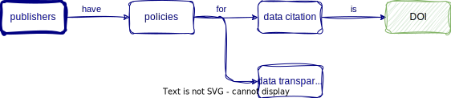
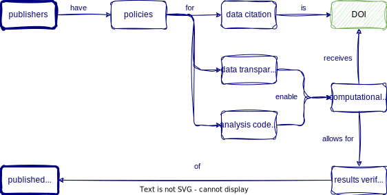

professions <- read_csv(here::here("data/scientists/professions.csv"))
dates <- read_csv(here::here("data/scientists/dates.csv"))
works <- read_csv(here::here("scientists/works.csv")) Joining data & communicating results with Quarto
CVEN 5837 - Summer 2023
Learning Objectives (for this week)
- Learners can use Quarto and GitHub Pages to publish an HTML file.
- Learners can add literature references to Quarto files using the navigation menu of RStudio visual editor.
- Learners can cross-reference figures and tables within an Quarto file.
- Learners can apply functions from the dplyr R Package to join multiple data sets.
Part 1: Joining data
We…
…have multiple data frames
…want to bring them together
Data: Women in science
Information on 10 women in science who changed the world
| name |
|---|
| Ada Lovelace |
| Marie Curie |
| Janaki Ammal |
| Chien-Shiung Wu |
| Katherine Johnson |
| Rosalind Franklin |
| Vera Rubin |
| Gladys West |
| Flossie Wong-Staal |
| Jennifer Doudna |
Source: Discover Magazine
Inputs
| name | profession |
|---|---|
| Ada Lovelace | Mathematician |
| Marie Curie | Physicist and Chemist |
| Janaki Ammal | Botanist |
| Chien-Shiung Wu | Physicist |
| Katherine Johnson | Mathematician |
| Rosalind Franklin | Chemist |
| Vera Rubin | Astronomer |
| Gladys West | Mathematician |
| Flossie Wong-Staal | Virologist and Molecular Biologist |
| Jennifer Doudna | Biochemist |
| name | birth_year | death_year |
|---|---|---|
| Janaki Ammal | 1897 | 1984 |
| Chien-Shiung Wu | 1912 | 1997 |
| Katherine Johnson | 1918 | 2020 |
| Rosalind Franklin | 1920 | 1958 |
| Vera Rubin | 1928 | 2016 |
| Gladys West | 1930 | NA |
| Flossie Wong-Staal | 1947 | NA |
| Jennifer Doudna | 1964 | NA |
| name | known_for |
|---|---|
| Ada Lovelace | first computer algorithm |
| Marie Curie | theory of radioactivity, discovery of elements polonium and radium, first woman to win a Nobel Prize |
| Janaki Ammal | hybrid species, biodiversity protection |
| Chien-Shiung Wu | confim and refine theory of radioactive beta decy, Wu experiment overturning theory of parity |
| Katherine Johnson | calculations of orbital mechanics critical to sending the first Americans into space |
| Vera Rubin | existence of dark matter |
| Gladys West | mathematical modeling of the shape of the Earth which served as the foundation of GPS technology |
| Flossie Wong-Staal | first scientist to clone HIV and create a map of its genes which led to a test for the virus |
| Jennifer Doudna | one of the primary developers of CRISPR, a ground-breaking technology for editing genomes |
Desired output
| name | profession | birth_year | death_year | known_for |
|---|---|---|---|---|
| Ada Lovelace | Mathematician | NA | NA | first computer algorithm |
| Marie Curie | Physicist and Chemist | NA | NA | theory of radioactivity, discovery of elements polonium and radium, first woman to win a Nobel Prize |
| Janaki Ammal | Botanist | 1897 | 1984 | hybrid species, biodiversity protection |
| Chien-Shiung Wu | Physicist | 1912 | 1997 | confim and refine theory of radioactive beta decy, Wu experiment overturning theory of parity |
| Katherine Johnson | Mathematician | 1918 | 2020 | calculations of orbital mechanics critical to sending the first Americans into space |
| Rosalind Franklin | Chemist | 1920 | 1958 | NA |
| Vera Rubin | Astronomer | 1928 | 2016 | existence of dark matter |
| Gladys West | Mathematician | 1930 | NA | mathematical modeling of the shape of the Earth which served as the foundation of GPS technology |
| Flossie Wong-Staal | Virologist and Molecular Biologist | 1947 | NA | first scientist to clone HIV and create a map of its genes which led to a test for the virus |
| Jennifer Doudna | Biochemist | 1964 | NA | one of the primary developers of CRISPR, a ground-breaking technology for editing genomes |
Inputs, reminder
names(professions)[1] "name" "profession"names(dates)[1] "name" "birth_year" "death_year"names(works)[1] "name" "known_for"nrow(professions)[1] 10nrow(dates)[1] 8nrow(works)[1] 9Joining data frames
Joining data frames
something_join(x, y)left_join(): all rows from xright_join(): all rows from yfull_join(): all rows from both x and y- …
Setup
For the next few slides…
x <- tibble(
id = c(1, 2, 3),
value_x = c("x1", "x2", "x3")
)x# A tibble: 3 × 2
id value_x
<dbl> <chr>
1 1 x1
2 2 x2
3 3 x3 y <- tibble(
id = c(1, 2, 4),
value_y = c("y1", "y2", "y4")
)y# A tibble: 3 × 2
id value_y
<dbl> <chr>
1 1 y1
2 2 y2
3 4 y4 left_join()

left_join(x, y)# A tibble: 3 × 3
id value_x value_y
<dbl> <chr> <chr>
1 1 x1 y1
2 2 x2 y2
3 3 x3 <NA> left_join()
professions %>%
left_join(dates) | name | profession | birth_year | death_year |
|---|---|---|---|
| Ada Lovelace | Mathematician | NA | NA |
| Marie Curie | Physicist and Chemist | NA | NA |
| Janaki Ammal | Botanist | 1897 | 1984 |
| Chien-Shiung Wu | Physicist | 1912 | 1997 |
| Katherine Johnson | Mathematician | 1918 | 2020 |
| Rosalind Franklin | Chemist | 1920 | 1958 |
| Vera Rubin | Astronomer | 1928 | 2016 |
| Gladys West | Mathematician | 1930 | NA |
| Flossie Wong-Staal | Virologist and Molecular Biologist | 1947 | NA |
| Jennifer Doudna | Biochemist | 1964 | NA |
right_join()

right_join(x, y)# A tibble: 3 × 3
id value_x value_y
<dbl> <chr> <chr>
1 1 x1 y1
2 2 x2 y2
3 4 <NA> y4 right_join()
professions %>%
right_join(dates)| name | profession | birth_year | death_year |
|---|---|---|---|
| Janaki Ammal | Botanist | 1897 | 1984 |
| Chien-Shiung Wu | Physicist | 1912 | 1997 |
| Katherine Johnson | Mathematician | 1918 | 2020 |
| Rosalind Franklin | Chemist | 1920 | 1958 |
| Vera Rubin | Astronomer | 1928 | 2016 |
| Gladys West | Mathematician | 1930 | NA |
| Flossie Wong-Staal | Virologist and Molecular Biologist | 1947 | NA |
| Jennifer Doudna | Biochemist | 1964 | NA |
full_join()

full_join(x, y)# A tibble: 4 × 3
id value_x value_y
<dbl> <chr> <chr>
1 1 x1 y1
2 2 x2 y2
3 3 x3 <NA>
4 4 <NA> y4 full_join()
dates %>%
full_join(works) | name | birth_year | death_year | known_for |
|---|---|---|---|
| Janaki Ammal | 1897 | 1984 | hybrid species, biodiversity protection |
| Chien-Shiung Wu | 1912 | 1997 | confim and refine theory of radioactive beta decy, Wu experiment overturning theory of parity |
| Katherine Johnson | 1918 | 2020 | calculations of orbital mechanics critical to sending the first Americans into space |
| Rosalind Franklin | 1920 | 1958 | NA |
| Vera Rubin | 1928 | 2016 | existence of dark matter |
| Gladys West | 1930 | NA | mathematical modeling of the shape of the Earth which served as the foundation of GPS technology |
| Flossie Wong-Staal | 1947 | NA | first scientist to clone HIV and create a map of its genes which led to a test for the virus |
| Jennifer Doudna | 1964 | NA | one of the primary developers of CRISPR, a ground-breaking technology for editing genomes |
| Ada Lovelace | NA | NA | first computer algorithm |
| Marie Curie | NA | NA | theory of radioactivity, discovery of elements polonium and radium, first woman to win a Nobel Prize |
Putting it altogether
professions %>%
left_join(dates) %>%
left_join(works) |>
kable()| name | profession | birth_year | death_year | known_for |
|---|---|---|---|---|
| Ada Lovelace | Mathematician | NA | NA | first computer algorithm |
| Marie Curie | Physicist and Chemist | NA | NA | theory of radioactivity, discovery of elements polonium and radium, first woman to win a Nobel Prize |
| Janaki Ammal | Botanist | 1897 | 1984 | hybrid species, biodiversity protection |
| Chien-Shiung Wu | Physicist | 1912 | 1997 | confim and refine theory of radioactive beta decy, Wu experiment overturning theory of parity |
| Katherine Johnson | Mathematician | 1918 | 2020 | calculations of orbital mechanics critical to sending the first Americans into space |
| Rosalind Franklin | Chemist | 1920 | 1958 | NA |
| Vera Rubin | Astronomer | 1928 | 2016 | existence of dark matter |
| Gladys West | Mathematician | 1930 | NA | mathematical modeling of the shape of the Earth which served as the foundation of GPS technology |
| Flossie Wong-Staal | Virologist and Molecular Biologist | 1947 | NA | first scientist to clone HIV and create a map of its genes which led to a test for the virus |
| Jennifer Doudna | Biochemist | 1964 | NA | one of the primary developers of CRISPR, a ground-breaking technology for editing genomes |
Part 2: Communicate results with Quarto
Why Quarto? -> Open Science






What is Quarto?
Quarto is a new, open-source,
scientific and technical
publishing system
the goal is to make the process of creating
and collaborating dramatically better

Quarto for literate programming


What is a .qmd?
A Quarto document i.e. a
.qmdis a plain text file
. . .
Metadata (YAML)
format: html
engine: knitrformat: html
engine: jupyter. . .
Code
```{r}
library(dplyr)
mtcars |>
dplyr::group_by(cyl) |>
dplyr::summarize(mean = mean(mpg))
``````{python}
from siuba import _, group_by, summarize
from siuba.data import mtcars
(mtcars
>> group_by(_.cyl)
>> summarize(avg_mpg = _.mpg.mean())
)
```. . .
Text
# Heading 1
This is a sentence with some **bold text**, some *italic text* and an
{fig-alt="Alt text for this image"}.Quarto makes moving between formats straightforward
Document
lesson-1.qmd
title: "Lesson 1"
format: htmlPresentation
lesson-1.qmd
title: "Lesson 1"
format: revealjsWebsite
_quarto.yml
project:
type: website
website:
navbar:
left:
- lesson-1.qmd- It is traightforward in Quarto to move between output formats
- As an educator, there are two things that are important to me
- reproducibility, and
- ease of transitiion between output formats
- I am using Quarto for everything, and it’s finally the tool let’s me go from one output type to anoher without the to change anything by the YAML metadata
For example, here are common things I produce
–> a lesson in document form
–> the same content in presentation form
–> the same content on a page in a website,
and you can see that all that needed to change going between these formats is a few lines in the yaml.
No slide breaks to remove, no citation style to change, no headings to re-level. This ease of transition has freed up time to focus my time on content, and that, folks, is the dream!
Comfort of your own workspace


Rich Documentation

Live Coding Exercise: Write a report
Clone GitHub repository from GitHub
- Open the GitHub Organisation for the course: https://github.com/cven5873-ss23/
- Locate the wk-06 repository with your username
wk-06-GITHUB-USERNAME - Follow along with me
Break

10:00
Photo by Blake Wisz
Cross-references
- no space between
{r}and#| tbl-cap: "A table" - spelling tbl not tab
- no spaces (use dashes in
label)
See Table 1…
```{r}
#| tbl-cap: "A table"
#| label: tbl-simple-table
tibble(
id = c(1, 2, 3),
name = c("X", "Y", "Z")
) %>%
knitr::kable()
```| id | name |
|---|---|
| 1 | X |
| 2 | Y |
| 3 | Z |
Homework week 5
Homework due dates
- All material on course website
- Homework assignment & learning reflection due: Friday, 14th July
Capstone Project Report
Information
- All material shared on website by Monday, 17th July
- Due date for report: Friday, 28th July
Thanks! 🌻
A large proportion of these slides are taken from Mine Çetinkaya Rundel’s “Hello Quarto” presentation & Thomas Mock’s “Quarto for the Curious” presentation
Slides created via revealjs and Quarto: https://quarto.org/docs/presentations/revealjs/ Access slides as PDF on GitHub
All material is licensed under Creative Commons Attribution Share Alike 4.0 International.